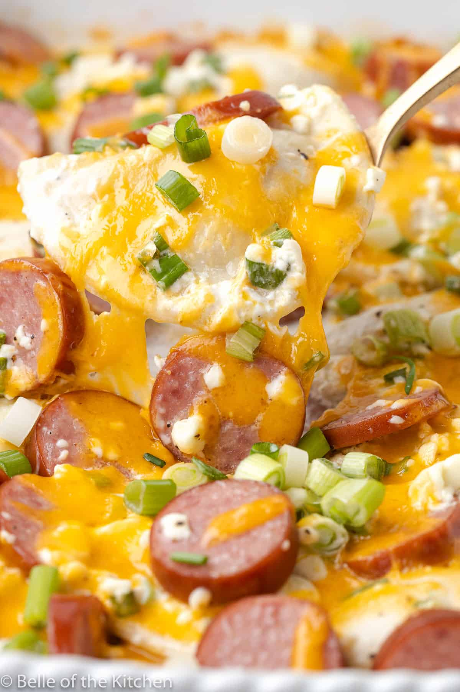

Pierogi Casserole

Description
I can never have enough quick and easy dinner recipes. They’re the name of the game at our house, and if you feel the same, you have to try this Pierogi Casserole Recipe.
If you’ve never had a pierogi before, they are essentially little dumplings that are filled with things liked whipped potatoes and onions. They are simply delicious!
Ingredients
- 16 oz frozen pierogi
- 14 oz kielbasa, sliced
- 1/2 cup chicken broth
- 1/2 cup sour cream
- 4 oz cream cheese, softened
- 1/2 tsp black pepper
- 3 green onions, sliced
- 1 cup shredded cheddar
Steps
- Preheat oven to 375, and grease a 9x13" casserole pan
- Place the pierogis and sliced sausages into the casserole pan
- Mix the cream cheese, sour cream, chicken broth, pepper, and half of the green onions in a medium mixing bowl. Pour the sauce over the top of the pierogies and sausage.
- Cover the pan with aluminum foil and bake for 30 minutes. Sprinkle the cheddar cheese over the top and bake uncovered for 10 minutes, until the cheese is melted.
- Top with the remaining green onions and serve.
Home